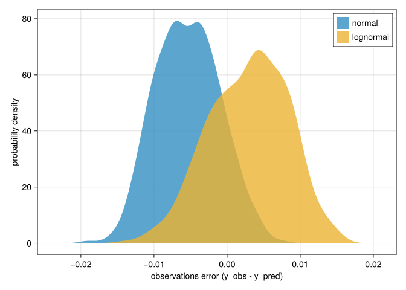
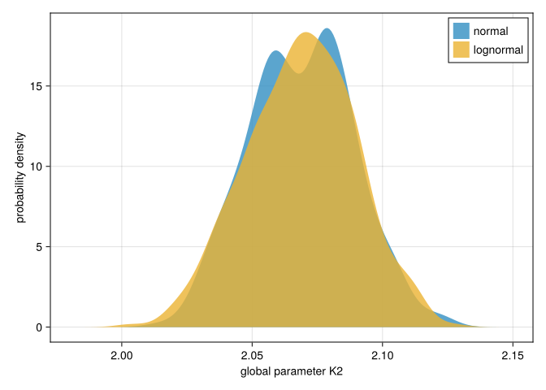
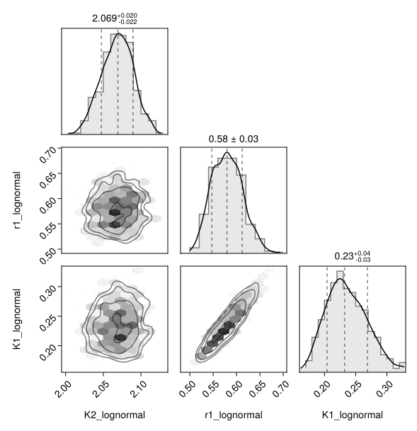
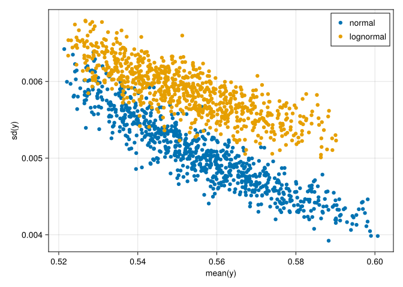
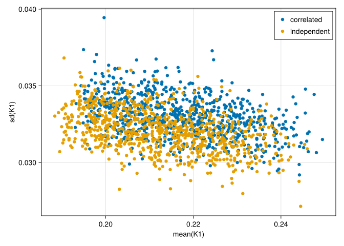

How to specify a custom LogLikelihood of the observations
This guide shows how the user can specify a customized log-Likelihood function.
Motivation
The loglikelihood function assigns a cost to the mismatch between predictions and observations. This often needs to be customized to the specific inversion.
This guide walks through he specification of such a function and inspects differences among two log-likelihood functions. Specifically, it will assume observation errors to be independently distributed according to a LogNormal distribution with a specified fixed relative error, compared to an inversion assuming observation error to be distributed independently normal.
First load necessary packages.
using HybridVariationalInference
using ComponentArrays: ComponentArrays as CA
using Bijectors
using SimpleChains
using MLUtils
using JLD2
using Random
using CairoMakie
using PairPlots # scatterplot matricesThis tutorial reuses and modifies the fitted object saved at the end of the Basic workflow without GPU tutorial, that used a log-Likelihood function assuming observation error to be distributed independently normal.
fname = "intermediate/basic_cpu_results.jld2"
print(abspath(fname))
prob = probo_normal = load(fname, "probo");Write the LogLikelihood Function
The function signature corresponds to the one of neg_logden_indep_normal. of signature
neg_log_den_user(y_pred, y_obs, y_unc; kwargs...)
It takes inputs of predictions, y_pred, observations, y_obs, and uncertainties parameters, y_unc and returns the logarithm of the likelihhood up to a constant.
All of the arguments are vectors of the same length specifying predictions and observations for one site. If y_pred, y_obs are given as a matrix of several column-vectors, their summed Likelihood is computed.
The density of a LogNormal distribution is
\[ \frac{ 1 }{ x \sqrt{2 \pi \sigma^2} } \exp\left( -\frac{ (\ln x-\mu)^2 }{2 \sigma^2} \right)\]
where x is the observation, μ is the log of the prediction, and σ is the scale parameter that is related to the relative error, $c_v$ by $\sigma = \sqrt{ln(c^2_v + 1)}$.
Taking the log:
\[ -ln x -\frac{1}{2} ln \sigma^2 -\frac{1}{2} ln (2 \pi) -\frac{ (\ln x-\mu)^2 }{2 \sigma^2}\]
Negating and dropping the constants $-\frac{1}{2} ln (2 \pi)$ and $-\frac{1}{2} ln \sigma^2$
\[ ln x + \frac{1}{2} \left(\frac{ (\ln x-\mu)^2 }{\sigma^2} \right)\]
function neg_logden_lognormalep_lognormal(y_pred, y_obs::AbstractArray{ET}, y_unc;
σ2 = log(abs2(ET(0.02)) + ET(1))) where ET
lnx = log.(CA.getdata(y_obs))
μ = log.(CA.getdata(y_pred))
nlogL = sum(lnx .+ abs2.(lnx .- μ) ./ (ET(2) .* σ2))
#nlogL = sum(lnx + (log(σ2) .+ abs2.(lnx .- μ) ./ σ2) ./ ET(2)) # nonconstant σ2
return (nlogL)
endIf information on the different relative error by observation was available, we could pass that information using the DataLoader with y_unc, rather than assuming a constant relative error across observations.
Update the problem and redo the inversion
HybridProblem has keyword argument py to specify the function of negative Log-Likelihood.
prob_lognormal = HybridProblem(prob; py = neg_logden_lognormalep_lognormal)
using OptimizationOptimisers
import Zygote
solver = HybridPosteriorSolver(; alg=Adam(0.02), n_MC=3)
(; probo) = solve(prob_lognormal, solver;
callback = callback_loss(100), # output during fitting
epochs = 20,
); probo_lognormal = probo;Compare results between assumptions of observation error
First, draw a sample form the inversion assumping normal and a sample from the inversion assuming loglornally distributed observation errors.
n_sample_pred = 400
(y_normal, θsP_normal, θsMs_normal) = (; y, θsP, θsMs) = predict_hvi(
Random.default_rng(), probo_normal; n_sample_pred)
(y_lognormal, θsP_lognormal, θsMs_lognormal) = (; y, θsP, θsMs) = predict_hvi(
Random.default_rng(), probo_lognormal; n_sample_pred)Get the original observations from the DataLoader of the problem, and compute the residuals.
train_loader = get_hybridproblem_train_dataloader(probo_normal; scenario=())
y_o = train_loader.data[3]
resid_normal = y_o .- y_normal
resid_lognormal = y_o .- y_lognormalAnd compare plots of some of the results.
i_out = 4
i_site = 1
fig = Figure(); ax = Axis(fig[1,1], xlabel="observations error (y_obs - y_pred)",ylabel="probability density")
#hist!(ax, resid_normal[i_out,i_site,:], label="normal", normalization=:pdf)
density!(ax, resid_normal[i_out,i_site,:], alpha = 0.8, label="normal")
density!(ax, resid_lognormal[i_out,i_site,:], alpha = 0.8, label="lognormal")
axislegend(ax, unique=true)
fig
The density plot of the observation residuals does not show the lognormal shape. The used synthetic observations were actually noramally distributed around predictions with true parameters.
How does the wrong assumption of observation error influence the parameter posterior?
i_site = 1
fig = Figure(); ax = Axis(fig[1,1], xlabel="global parameter K2",ylabel="probability density")
#hist!(ax, resid_normal[i_out,i_site,:], label="normal", normalization=:pdf)
density!(ax, θsP_normal[:K2,:], alpha = 0.8, label="normal")
density!(ax, θsP_lognormal[:K2,:], alpha = 0.8, label="lognormal")
axislegend(ax, unique=true)
fig
The marginal posterior of the global parameters is also similar, with a small trend towards lower values.
i_site = 1
θln = vcat(θsP_lognormal, θsMs_lognormal[i_site,:,:])
θln_nt = NamedTuple(Symbol("$(k)_lognormal") => CA.getdata(θln[k,:]) for k in keys(θln[:,1])) #
#θn = vcat(θsP_normal, θsMs_normal[i_site,:,:])
#θn_nt = NamedTuple(Symbol("$(k)_normal") => CA.getdata(θn[k,:]) for k in keys(θn[:,1])) #
# ntc = (;θn_nt..., θln_nt...)
plt = pairplot(θln_nt)
The corner plot of the independent-parameters estimate looks similar and shows correlations between site parameters, $r_1$ and $K_1$.
i_out = 4
fig = Figure(); ax = Axis(fig[1,1], xlabel="mean(y)",ylabel="sd(y)")
ymean_normal = [mean(y_normal[i_out,s,:]) for s in axes(y_normal, 2)]
ysd_normal = [std(y_normal[i_out,s,:]) for s in axes(y_normal, 2)]
scatter!(ax, ymean_normal, ysd_normal, label="normal")
ymean_lognormal = [mean(y_lognormal[i_out,s,:]) for s in axes(y_lognormal, 2)]
ysd_lognormal = [std(y_lognormal[i_out,s,:]) for s in axes(y_lognormal, 2)]
scatter!(ax, ymean_lognormal, ysd_lognormal, label="lognormal")
axislegend(ax, unique=true)
fig
The predicted magnitude of error in predictions for the fourth observation across sites is of the same magnitude, and still shows (although weaker) pattern of decreasing uncertainty with increasing value.
plot_sd_vs_mean = (par) -> begin
fig = Figure(); ax = Axis(fig[1,1], xlabel="mean($par)",ylabel="sd($par)")
θmean_normal = [mean(θsMs_normal[s,par,:]) for s in axes(θsMs_normal, 1)]
θsd_normal = [std(θsMs_normal[s,par,:]) for s in axes(θsMs_normal, 1)]
scatter!(ax, θmean_normal, θsd_normal, label="normal")
θmean_lognormal = [mean(θsMs_lognormal[s,par,:]) for s in axes(θsMs_lognormal, 1)]
θsd_lognormal = [std(θsMs_lognormal[s,par,:]) for s in axes(θsMs_lognormal, 1)]
scatter!(ax, θmean_lognormal, θsd_lognormal, label="lognormal")
axislegend(ax, unique=true)
fig
end
plot_sd_vs_mean(:K1)
For the assumed fixed relative error,the uncertainty in the model parameters, $K_1$, across sites is similar to the uncertainty with normal log-likelihood.